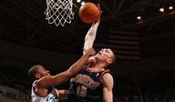

La razón generalmente reconocida es el cambio de la liga en la interpretación del contacto iniciado por jugadores ofensivos. Esas tontas maniobras contorsionistas para pescar silbatos saltando de lado a los defensores o fingiendo movimientos de tiro que harían sonrojar incluso a Joakim Noah están resultando ahora en nulos o incluso faltas ofensivas. Tenga en cuenta que las faltas y los tiros libres también han disminuido esta temporada.
La razón generalmente reconocida es el cambio de la liga en la interpretación del contacto iniciado por jugadores ofensivos. Esas tontas maniobras contorsionistas para pescar silbatos saltando de lado a los defensores o fingiendo movimientos de tiro que harían sonrojar incluso a Joakim Noah están resultando ahora en nulos o incluso faltas ofensivas. Tenga en cuenta que las faltas y los tiros libres también han disminuido esta temporada.
TOP HISTORIAS
Informes: entrenador de bomberos de Sacramento Kings Luke Walton después de inicio de 6-11
Walton, quien fue contratado por los Kings en 2019, tuvo solo 68-93 en más de dos temporadas como entrenador de Sacramento.
Esta fecha en la historia de la NBA: Semana del 21 de noviembre
Hace veinte años, Chris Anderson se convierte en el primer jugador de la D-League en ser convocado a la NBA.
Stephen Curry, Draymond Green entre 4 Warriors eliminados contra Pistons
Stephen Curry, Draymond Green, Otto Porter Jr. y Andre Iguodala no jugarán contra Detroit.
CLASIFICACIONES DE PODER
Power Rankings Notebook: Suns empujando el ritmo

Desglosando estadísticas y filmando historias clave a lo largo de la liga después del primer mes de la temporada.
Rankings de poder: Guerreros, Nets en ascenso

Vea dónde se ubican los 30 equipos después de las primeras tres semanas de la temporada 2021-22
Clasificaciones West Power de temporada baja: Suns en la cima
Phoenix y Los Angeles Lakers comienzan en la cima en esta clasificación temprana de cada equipo en la Conferencia Oeste.
ULTIMAS NOTICIAS
NBA League Pass: Transmite más juegos.
El mejor regalo para el fanático de la NBA. Dales acceso a cientos de juegos fuera del mercado de la NBA en vivo y a pedido esta temporada, ¡o date un capricho!
Rivers: 76ers no se preocupan por la racha perdedora
Filadelfia ha enfrentado muchas adversidades esta temporada, desde la ausencia de Ben Simmons hasta jugadores que se pierden partidos debido a protocolos de salud y seguridad.
La frustración de los Lakers crece con la derrota ante los Bucks
La actuación dominante de Giannis Antetokounmpo el miércoles contra los Lakers tiene a Los Ángeles nerviosa cuando comienza su viaje como visitante.